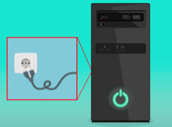
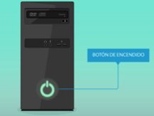
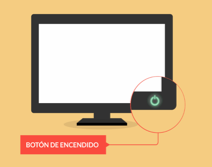
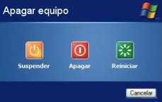
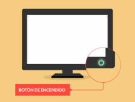
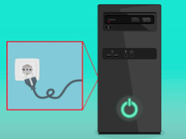

Ahora que conoces las partes más importantes de una computadora, vamos a practicar los pasos que debes seguir para encenderla:
Encender el equipo:
- Coloca el cable que sale del CPU y del monitor en un tomacorriente.

- Presiona el botón de encendido del CPU.

- Presiona el botón de encendido del monitor.

Apagar equipo:
Aparecerá en la pantalla el siguiente mensaje: APAGAR EQUIPO

Cuando lo veas, sigue los siguientes pasos:
- Primero, presiona el botón del monitor

- Segundo, desconecta los cables del tomacorriente.
